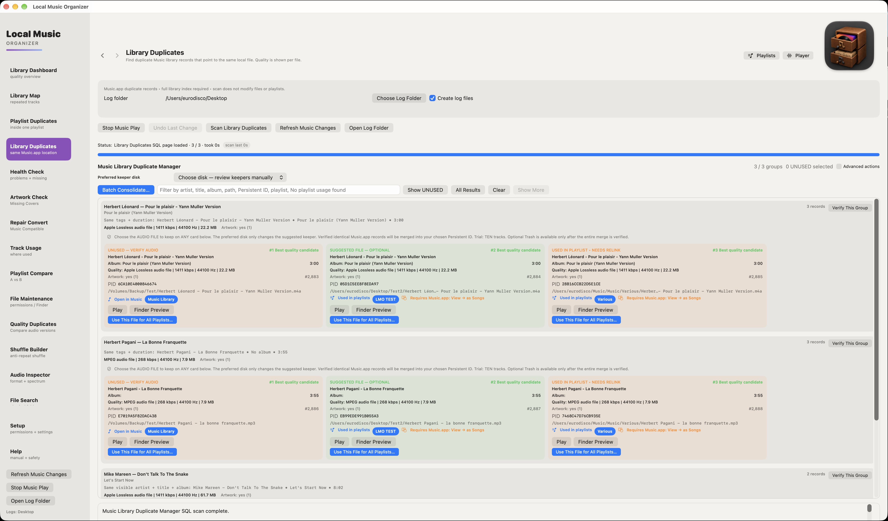

How to find duplicate songs in Music.app on Mac
A repeated song in a playlist is not necessarily a duplicate audio file. Music.app can also contain two library records for the same file, or separate files with different versions of a recording. Local Music Organizer has a different tool for each case.
Choose the right duplicate scan
Playlist Duplicates finds repeated entries inside one selected playlist. Run Scan Playlist Duplicates and review which occurrence should remain. Removing an occurrence here leaves both the Music.app library record and the audio file in place.
Library Duplicates finds eligible duplicate Music.app library records, whether they point to one physical file or to verified matching local copies on different disks. A physical audio file, the Music.app Persistent ID and a track's ordered position in a playlist are separate things. Scan Library Duplicates is read-only. The app never removes a record, changes a playlist or moves a physical file just because it found a possible match. See the illustrated Library Duplicates walkthrough and all three screenshots.
Consolidate Music.app records without losing playlist order
- Build the complete index. In Library Dashboard complete Full Library Records and Index Playlist Usage. Wait for disk discovery, then run Scan Library Duplicates. Search and page through results: seeing 50 groups on screen is only pagination, not a full-library scan limit.
- Choose your keeper. Each card shows its Music.app PID, file path and playlist usage. On the record whose audio file and PID should survive, select Use This File for All Playlists…. Do not rely on a KEEP suggestion or a saved UNUSED label without reviewing the group.
- Review the exact change. Eligible verified matching local MP3 and Apple Lossless (ALAC) copies can be relinked to the chosen physical file and their redundant Music.app records consolidated. If records already share one file, only the record consolidation is necessary. LMO checks the live playlist memberships and preserves the original affected positions and order.
- Process more than one group. Batch Consolidate… lets you select a preferred keeper disk inside Library Duplicates, choose or skip each group's KEEP record, review exact paths and PIDs, and approve the verified groups once. When more than one disk exists and no preference is chosen, groups begin as Skip until selected manually. Invalid or mismatched candidates remain blocked.
Physical Trash is separate and optional
By default, redundant audio files remain on disk after Music.app records are consolidated. If you expressly enable optional macOS Trash in the batch confirmation, LMO first finishes and verifies every approved group's Music.app record and playlist changes. It then performs two complete independent live file-reference checks shared across the whole batch, not one full-library scan per group. Only files proved unreferenced are moved sequentially to Trash, after their original and survivor file identities and SHA-256 hashes have been checked. A missing disk, unexpected reference, unsupported file or failed proof leaves the physical file untouched. Restoring a trashed audio file does not restore deleted Music.app PIDs.
When to use Advanced actions
The normal guided KEEP workflow does not require Advanced actions. Turn it on for individual inspection, tag editing, Consolidate Music Records… for two records already referencing one file, or a deliberate Remove / Preserve Playlists… operation. Remove UNUSED Record Only… deletes only an exact Music.app record after a fresh live no-playlist-use check; it neither merges other records nor deletes the physical file. Review Missing Record… is separate and may require cloud-only or missing-path review. A saved UNUSED label is never sufficient authority to delete a record that is now used in Music.app.
Quality Duplicates finds candidates for different physical versions of the same recording using indexed Music.app records and available acoustic fingerprint matches. Run Find Quality Duplicates to see candidate groups; A/B Compare... on a group opens two files preselected for listening. For a comparison that does not use playlist data, click Manual A/B Compare... on the Quality Duplicates toolbar and select two local files through Browse. Use Waveform Compare... to open both recordings directly in Audio Inspector for full-track signal comparison. The Likely Best label in found groups is a technical ranking, not a judgment about mastering or sound quality.
What to check before removing anything
Start with Build / Refresh Library Index in Library Dashboard. Include playlist usage when you need to see where records are used. Then run the scan that matches the problem. Compare the file paths, playlist relationships and technical details. Where two separate recordings are involved, you can open A/B Duplicate Compare and listen to the same passage from each file.
Keep in mind what each action changes. Remove Selected Playlist Entries removes playlist occurrences. Remove Selected Duplicate Records is a record-level action; it does not by itself remove the physical audio files or preserve another record's playlist positions. For record groups used in playlists, choose the verified Use This File for All Playlists… or Batch Consolidate… workflow instead of deleting playlist-used records directly. In Quality Duplicates, Remove From Playlist changes a playlist entry, whereas Move to Trash moves the chosen physical file to macOS Trash and does not automatically clean up Music.app references. Review those relationships first.
When two versions are worth keeping
A CD release, remaster, live recording or vinyl transfer may be intentionally stored as a separate file. Higher bitrate or sample rate alone does not establish which version sounds better. Compare the recordings before treating either one as disposable.
The Quality Duplicates walkthrough, feature overview and Support documentation provide more context about the individual tools.


Quality Duplicates shows candidate groups for review; Manual A/B Compare on its toolbar lets you compare two files independently of Music.app playlists.